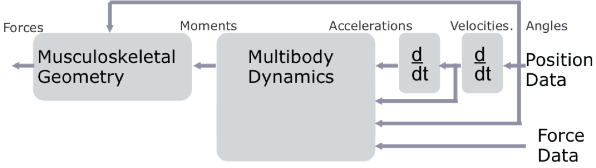
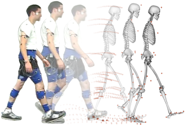
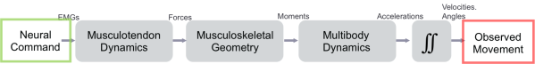

OpenSim has a broad range of capabilities for generating and analyzing musculoskeletal models and dynamic simulations. This chapter provides an overview of these capabilities and a list of resources to find more information about each component of the OpenSim workflow.
The OpenSim Model
One of the major goals of the OpenSim project is to provide a common platform for creating and sharing models of the musculoskeletal system. Thus, the first component of any analysis is an OpenSim model. An OpenSim model represents the dynamics of a system of rigid bodies and joints that are acted upon by forces to produce motion. The OpenSim model file is made up of components corresponding to parts of the physical system. These parts include bodies, joints, forces, constraints, and controllers.
Additional information is also available in the section on OpenSim Models. A large repository of existing models is available at SimTK.org (https://simtk.org/home/nmblmodels). This library includes models of the lower extremity, head and neck, spine, and wrist. We encourage you to contribute your own models to this library to enable other researchers to build on your work and further advance the field. For example, in a model used for simulation of human walking, the bodies represent the geometry and inertial properties of the body segments. The joints specify the articulations at the pelvis, hip, knee, and ankle joints, while a constraint could be used, for example, to couple the motion of the patella with the model’s knee flexion angle. The forces in the model include both internal forces from muscles and ligaments and external forces from interaction with the ground. Finally, the model’s controller determines the activation of muscles (e.g., computed muscle control).
Importing Experimental Data
In many cases, you will use OpenSim to analyze experimental data that you have collected in your laboratory. This data typically includes:
- Marker trajectories or joint angles from motion capture
- Force data, typically ground reaction forces and moments and/or centers of pressure
- Electromyography
See Preparing Your Data for detailed information about preparing and importing your experimental data.
Scaling
If you are using a generic model from the existing library of models, the next step is to scale the model to match the experimental data collected for your subject—functionality provided by the Scale Tool in OpenSim. The purpose of scaling a generic musculoskeletal model is to modify the anthropometry, or physical dimensions, of the generic model so that it matches the anthropometry of a particular subject. Scaling is one of the most important steps in solving inverse kinematics and inverse dynamics problems because these solutions are sensitive to the accuracy of the scaling step. In OpenSim, the scaling step adjusts both the mass properties (mass and inertia tensor), as well as the dimensions of the body segments.
See the section on Scaling for more details. Tutorial 3 - Scaling, Inverse Kinematics, and Inverse Dynamics (old) includes an example using the Scale Tool. This tutorial is also accessible from the OpenSim application Help menu.
The Inverse Problem
OpenSim enables researchers to solve the Inverse Dynamics problem, using experimental measured subject motion and forces to generate the kinematics and kinetics of a musculoskeletal model (see figure below).

In inverse dynamics, experimentally measured marker trajectories and force data are use to estimate a model’s kinematics and kinetics.
Inverse Kinematics
The Inverse Kinematics (IK) Tool in OpenSim finds values for the generalized coordinates (joint angles and positions) in the model that best match the experimental kinematics recorded for a particular subject (see figure below). The experimental kinematics targeted by IK can include experimental marker positions, as well as experimental generalized coordinate values (joint angles). The IK Tool goes through each time step of motion and computes generalized coordinate values which position the model in a pose that "best matches" experimental marker and coordinate values for that time step. Mathematically, the "best match" is expressed as a weighted least-squares problem, whose solution aims to minimize both marker and coordinate errors.

Experimental markers are matched by model markers throughout the motion by varying the generalized coordinates (e.g., joint angles) through time. See Inverse Kinematics for full documentation on running IK in OpenSim. Tutorial 3 - Scaling, Inverse Kinematics, and Inverse Dynamics (old) walks through an example of using Inverse Kinematics for human walking.
Inverse Dynamics
Dynamics is the study of motion and the forces and moments that produce that motion. The Inverse Dynamics (ID) Tool determines the generalized forces (e.g., net forces and torques) that cause a particular motion, and its results can be used to infer how muscles are actuated to generate that motion. To determine these internal forces and moments, the equations of motion for the system are solved with external forces (e.g., ground reaction forces) and accelerations given (estimated by differentiating angles and positions twice). The equations of motion are automatically formulated using the kinematic description and mass properties of a musculoskeletal model in Simbody™.
See Inverse Dynamics for full documentation on running ID in OpenSim. Tutorial 3 - Scaling, Inverse Kinematics, and Inverse Dynamics (old) walks through an example of using ID for human walking.
Static Optimization
Static optimization is an extension of inverse dynamics that further resolves the net joint moments into individual muscle forces at each instant in time based on some performance criteria, like minimizing the sum of squared muscle forces. See Static Optimization for more details.
The Forward Problem
OpenSim is also capable of generating muscle-driven forward simulations of gait and other movements (see figure below).

In a forward dynamic simulation of motion, simulated muscle excitations are used to drive the motion of a model to follow some observed movement.
The Forward Dynamics Tool takes a set of controls (e.g., muscle excitations) to drive a model's motion by integrating forward in time. Typically, muscle excitations are generated using the Computed Muscle Control (CMC) Tool. As a pre-cursor to running CMC, the Residual Reduction Algorithm (RRA) is used to minimize the effects of modeling and marker data processing errors that aggregate and lead to large nonphysical compensatory forces called "residuals". Specifically, RRA alters the torso mass center of a subject-specific model and permits the kinematics of the model from inverse kinematics to vary in order to be more dynamically consistent with the ground reaction force data. Thus, the typical workflow for generating a muscle-driven simulation after importing experimental data is Scale → IK → RRA → CMC → Forward Dynamics (see figure below).

Full documentation of Forward Dynamics, the Residual Reduction Algorithm, and Computed Muscle Control is available in the respective sections.
Analyzing Simulations
Answering your research questions often requires delving deeper into the details of a simulation. Thus, OpenSim includes an Analyze Tool that allows you to estimate, for example, muscle fiber or tendon lengths during a motion, or the loads on the knee joint. The Analyze Tool enables you to analyze a model or simulation based on a number of inputs that can include time histories of model states, controls, and external loads applied to the model. The following analyses are available in OpenSim:
- Body Kinematics: Reports the spatial kinematics (position and orientation, linear and angular velocity, linear and angular acceleration) of specified bodies for the duration of the analysis.
- Point Kinematics: Reports the global position, velocity and acceleration of a point defined local to a body during a simulation.
- Muscle Analysis: Reports all attributes of all muscles (including fiber length and velocity, normalized fiber length, pennation angle, active-fiber force, passive-fiber force, tendon force, and more).
- Joint Reactions: Reports joint reaction forces. These are forces that enforce the motion of the joint. The force applied to either parent or child and expressed relative to ground, parent or child can be reported.
- Induced Acceleration: Computes accelerations caused or "induced" by individual forces acting on a model—for example, the contribution of individual muscle forces to the mass center acceleration.
- Force Reporter: Reports all forces acting in the model. For ligaments and muscles, the tension along the path is reported; for ideal actuators, the scalar force or torque is reported. For all other forces, the resultant body forces (force and moment acting at the center of mass of the body) are reported. For example, contact forces from an ElasticFoundationForce element yield the resultant body force on the contacting bodies separately, expressed in the ground frame. For constraints, the same is true, except the forces are expressed relative to the most distal common ancestor body. Whenever a constraint involves ground, this is the ground body; however, if (for example) a model of the arm has a hand with fingers touching via a point constraint, then the forces are expressed in the nearest common ancestor, which would be the palm (if modeled as a single body).
More details about the analyses available in OpenSim are available in the sections Analyses, Joint Reactions Analysis, and Induced Acceleration Analysis.
Next: Preparing Your Data
{kind=link}
{kind=link}
{kind=link}